EENG 383
Assembly Instruction for development board
Tools
| Side Cutters | 
| Side cutters are great at cutting flush to a surface. This will be helpful when you trim the leads sticking through the PCB after soldering in the through hole components. The just-cut leads will fly away at a surprisingly high rate of speed. Always wear safety glasses when using your side cutters and aim the cut lead away from other people. |
| Safety Glasses | 
| Always wear safety glasses when cutting wire with side cutters and while soldering. Regular eye glasses are an acceptable substitute for the safety glasses in your kit. |
| Wire | 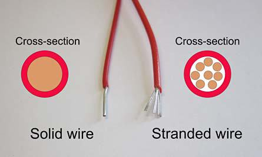 | You will encounter two types of wire in our class, solid and stranded wire. Solid core is easier to work with when using solderless bread boards because it's stiffer, making it easier to insert into the bread board's plastic holes. However, solid core wire is much stiffer than stranded making it less useful in any application where the wires needs to be regularly bent or moved. The size of a wire's cross section is called its gauge. We will generally use 22 gauge wires, where 8 gauge is common in household wiring. |
| Wire Strippers | 
| The wire strippers will remove the outer layer of insulation on stranded and solid core. The cutters on the wire strippers are almost worthless; use the side cutters instead. You should take a few minutes to adjust the sliding stop on the strippers so that they cut through the wire insulation without nicking the wire. Do this by loosening the screw and bolt on the handle and sliding the screw and bolt towards the cutting jaw so that, when closed, the jaws of the cutter have an opening approximately the same side as the wire. Tighten the screw and bolt so that all future wires are stripped to perfection. |
| Tweezers | 
| The tweezers are great for handling those small surface mount devices. When I am placing parts I generally use two hands, one to control the open/close of the tweezers tip and the other as a resting surface for the tweezers. This helps me steady the tweezers tips. Keep the rubber protective cover for the tweezers as it will help preserve the sharp tip on the tweezers. |
| Solder Wick | 
| Solder wick is used to pick-up excess solder left after reflowing your board using solder paste. When new, the wick is like a dry sponge. In order to soak up fluids, you need to initially wet a dry sponge. Similarly, you should melt a 1/4" length of solder into the end of the solder wick before using it (also called tinning the solder wick). When using a tinned solder wick, use the modestly silver section between the heavily tinned area and the un-touched copper solder wick. |
| Hemostat | 
| Solder wick is great at picking up excess solder, but, being made of copper, is also an excellent conductor of heat. If you hold solder wick in your fingers you will burn them. Instead, cut a 2" length of solder wick (with your side cutters), and clamp the wick in your hemostats. The ratcheting mechanism will hold the wick fast while you tin it and then use it to pick up solder. |
Getting Ready
- Let's start by performing a simple test to make sure your PCB was
manufactured correctly - there is not a short circuit between your power
and ground rails on your PCB.
Use the bench digital multimeter to check the resistance between Vcc and
GND. Use the "Measure Resistance" procedure from the inLab and probe the
Vcc and GND pins next to the PIC footprint (shown in the image below).
You should read a very high (open circuit) resistance. If you are reading
1Ω or lower, stop the assembly procedure and get a new PCB - yours
has a fatal flaw. This said, I have yet to come across a PCB with a
short between the power rails, but there is always a first time for
everything.
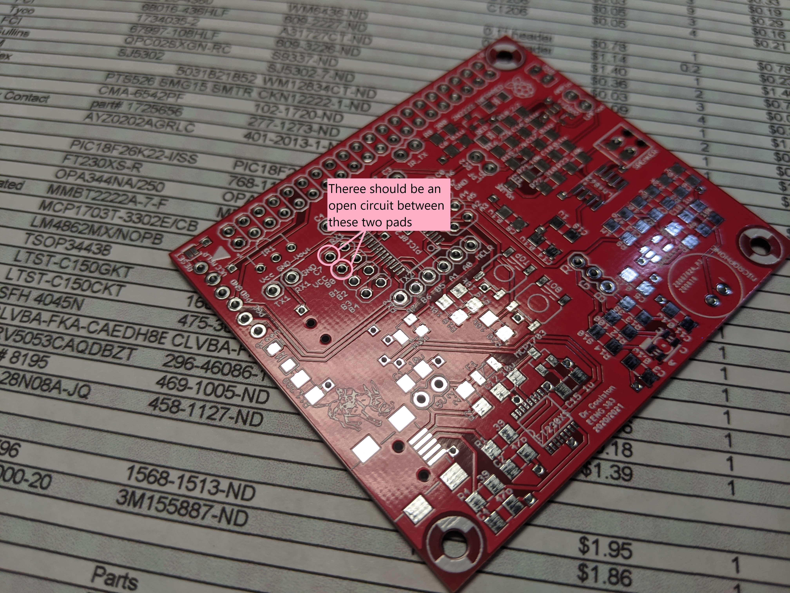
- A good first step is to spread out your parts in a secure location. Group them like shown in this parts diagram. This will help more easily find the correct parts when you need them. Note that the parts diagram linked above is from an earlier revision of the board so the number of capacitors, etc. may be slightly different.
- Get a parts tray, the solder paste, the solder paste dispenser, a dispenser needle, the magnifying goggles, and a pair of tweezers. Solder paste is located in the small black refrigerator on top of the blue cabinet in the NW corner of Brown 305. Please make sure to put the solder paste back in the refrigerator when you are done. Also, please make sure you have at least 2 hours to sit down and complete soldering on the surface mount components. This process is very hard to safely pause and resume!!
- Organize your parts.
There are two types of parts, through-hole and surface mount. We
will be soldering all the surface mount parts using the reflow
skillet technique then use a soldering iron to solder the
through-hole components.
- Through-hole components have long pins on them that allow them to stick entirely through the printed circuit board. Leave all the through-hole components in your bag. We'll solder them later.
- Surface mount components have small metal wings or end caps that are designed to sit on the surface of the printed circuit board. Since they are generally very small they often come packages in paper tape. You'll have to carefully remove them from the tape using tweezers to remove the clear cover from the top of the tape.
- Remove the parts one-by-one from the parts bag and line them up on the Parts Diagram to verify that all parts are accounted for. Note any missing parts. If you are missing a component, check the back of the speaker - it uses its magnet to hang on to things. If you are missing one or two components, you should probably just continue with the assembly and hand-solder the parts later. Someone can help you with this if needed.
- Now, take all the SMT components from the Parts Diagram and place them in the black parts tray. Put all the through-hole parts back in the plastic bag for later. You may want to remove the SMT parts from their tape holders. I put the tape form capacitors in the tray to provide a quick reference to their values. The resistors have a labeling notation which makes it easy to identify the value of a particular resistor. Capacitors lack such markings making it easy to put the wrong capacitor in the wrong place.
- Load up the solder paste into the solder paste "gun".
- press the oval button on the top of the gun and pull the plunger all the way back into the body of the gun.
- Remove the black cap from the solder paste tube.
- Attach a black syringe needle to the dispensing end of the solder paste tube. Twist it securely in place. This takes a fair amount of force.
- Put the solder paste tube onto gun and twist it so that it securely attached.
- Squeeze the trigger until the plunger reaches the red gasket inside the solder paste tube.
- Gently squeeze the trigger until you get a small worm of solder paste out the end of the dispenser. You're ready to go at this point.
- Try dispensing a small dab of solder on all the two and three terminal device pads. Remember that the dab of solder paste should be about the size of a hamburger on a plate - no turkeys or Oreo cookies. On the PIC and FT230 devices lay a "worm" of solder across the pads as shown in the image below. This board ended up with a couple of solder bridges on the PIC and the FT230, indicating that I used too much solder paste for my "worms". Don't worry about solder bridges, you can remove them later. Can you see where I forgot to put solder paste in the image below? Hint, look for the Hall Effect sensor.
{kind=link}
{kind=link}

Place your parts on the board
- Place the smallest parts first and largest parts last as this helps you to avoid bumping a part that has already placed. The smallest parts are the 1206 discretes, followed by the ICs, and finally the largest are the mechanical parts. Time taken now to double check proper part location and part orientation will save you time and aggravation later!
- Place your parts working your way from the middle of the board to the edge, as again it will help you avoid bumping into a part you have already places.
- Place all horizontally-orientated resistors so that the printed text is readable from the bottom side of the board. Place all vertically-orientated resistors so that the printed text is readable from the right side of the board. I really don't care which side you consider the bottom or right, just keep resistor orientation consistent.
- If there is more than one part of a particular value (e.g. 10k resistors), then place all of them at the same time. This will help you account for all the parts and help you make sure that you do not put the wrong part in the wrong place.
- Put a small dab of paste on a pad To scale the solder paste on the pad should look like a large hamburger on a dinner plate. You should not have a thanksgiving turkey or an Oreo cookie worth of solder paste on that pad.
- If there are a lot of people wanting to use the solder paste, it pays to put a dab of solder paste on all the pads and lay the components on later. The solder paste will not dry out. If you have the equipment to yourself, you may instead, want to apply solder paste to all of the pads for a single component type (e.g. 10k resistors) then place just those components.
- Use your tweezers to pick up the small components and place them on the pasty pads board. I use two hands to place components on the board; one hand holds the tweezers and the other hand steadies the first. Resists the temptation to "squish" components down on the board. Nothing good will come from this practice. As you will later see, when you reflow the board, the components will naturally settle into a pool of solder.
- After putting down a bunch of the components my board
looked like this. Yea, it's far from perfect, but I didn't worry
because I knew that the volume of solder paste would reduce a lot
when it reflowed and that the surface tension of the liquid
solder will align the parts.

- When putting down the fine pitched ICs (e.g. FTR and PIC) do not try to put a small dab of solder paste on each pad - this will lead to putting way to much solder paste on the pads. Instead, as you can see in the image above, my preferred technique is to put a thin line of solder paste down the middle of the pads. Since molten solder will not stick to the blue solder mask, almost all the molten solder will pull back to the pads and pins (I know it sounds crazy, but it works). In the image above, I put too much solder paste on the FT230XS pads as I ended up with a couple of solder bridges.
- Remember to double-check the orientation of pin 1 on your ICs. There are marking on the silk screen to help you get this right. I like to use the hemostats to place the large parts like the USB connector and the big ICs.
- Some component specific hints:
- The notch of the RGB LED points to the upper-left, towards resistor R14.
- You have 3 different SOT-23 devices that need to be placed in the correct location.
- You can identify the cathode of the red and green LEDs by looking for the green strip on the edge of the lens.
- The IR LED's lens sits parallel to the PCB, not straight up in the air.
- You can use this image to tell the capacitors apart.

Reflow your board.
In the next stage of the assembly process you are going to heat up your development board using a commercial-grade cooking skillet. Heating the solder paste will cause it to first dry out and then, when it gets hot enough, to transition into molten solder. The transition from gooey solder paste to molten solder is termed "reflow". Here is a nice time lapse of the reflow of a different development board - the process shown took about 6 minutes. In the video, I applied too much solder paste and created multiple solder bridges visible at the end.In order to properly reflow your board, the reflow skillet MUST START OFF COOL ENOUGH SO THAT YOU CAN TOUCH IT WITH YOUR BARE HAND. To determine if the skillet is cool enough, first put a single drop of water on the skillet. If the water drop does not evaporate after 10 seconds, you can safely go ahead a give the skillet a quick touch to test the temperature. Remove any water from the skillet surface before reflowing your PCB.
- Gently place the pasty PCB onto the reflow skillet. You can reflow more than one PCB at a time - sharing is caring!
- Position the air cleaner (sucky sucky tube) head over you PCB.
Be careful not to bump your PCB with the air cleaner tube.

- Crank the skillet temperature knob all the way to 400 degrees.
- Under no circumstances should you use the Mantis to observe your board as its being reflowed as this will definitely damage this expensive piece of equipment!
- After 2 minutes the PCB will be warming nicely, the solder paste at this point will evened out across the pads as if the heat were somehow melting it.
- By 4 minutes the solder paste will have a dried to a baked consistency.
At about this time little whiffs of smoke may curling out from under the
PCB. While this initially freaked me out I have since come to the
conclusion that this is normal and does not damage the bottom side
solder mask.

- After about 6 minutes some of the solder paste in the hotter regions
or areas with little thermal mass started to reflow.

- In about 8 minutes all the solder under even the biggest components
will have flowed. Before shutting off the heat, make sure that the all
the solder paste has transformed from a grey mess to shiny metal blobs.
Time to shut off the heat on the skillet. You may
have a few solder bridges that need to be fixed, but we'll get to that after
the board cools.

- Let the board sit for 2 minutes after you turn off the heat before sliding the board (with your hemostats) to the edge of the skillet that has a trough. Then carefully lift the board so that one side sits on the raised edge of the skillet and the other edge sits on the skillet surface. This allows air to flow under the edge of your board, speeding up cooling.
- Let the board sit in this way for 2 minutes then pick up the board with your hemostats and put your board on a cardboard surface (a notebook). Warning, the board may still be hot enough to burn you at this point.
- After letting your board sit for another 2 minutes or so, it should be safe enough to check the temperature by poking it with your finger - yea very scientific. When it's cool enough to pick up, proceed with the board touch-up.
Fixing Problems on Your Board
After your solder paste has reflowed and your board has cooled down enough to handle, you will need to perform a close visual inspection to identify improper solder joints. A solder joint is improper if it does not electrically connect the device terminal to the PCB (dry joint) or if the solder joint connects two or more adjacent device terminals (a solder bridge). It is also possible that you may have installed a component in backwards or swapped the location of two identically sized parts.Regardless of the problem, it's up to you to fix it. Here are some guidelines to fixing these types of problems.
Removing Solder Bridges
Solder bridges occur between adjacent device terminals (pins) when too much solder paste was applied to the PCB. When reflowed, this large mass of solder jumps (or bridges) to an adjacent pin making an improper electrical connection. Fortunately, solder bridges are easy to spot; just look for a mass of solder joining adjacent pins of an IC. Note, I have never seen a solder bridge form underneath an IC or discrete component.If you have solder bridges, then you will need to remove them. This will be one of the hardest technique to master when soldering, but some proper preparation greatly increases the chances of a successful outcome. You will need, a soldering iron, solder flux, and some solder wick.
Removing Solder Bridge - Step #1
Cut off a 1" to 2" portion of solder wick. Hold this piece of solder wick in your hemostats. Twist the wick once or twice around the tip of the hemostat so that the wick is being held firmly in place. Using the soldering iron, melt some solder onto the end of the solder wick. You want the solder to soak into the fabric of the solder wick. This is called tinning and is similar to wetting a new dry sponge before using it for the first time. When tinned properly your wick should look like the bottom piece of solder wick in the following image.
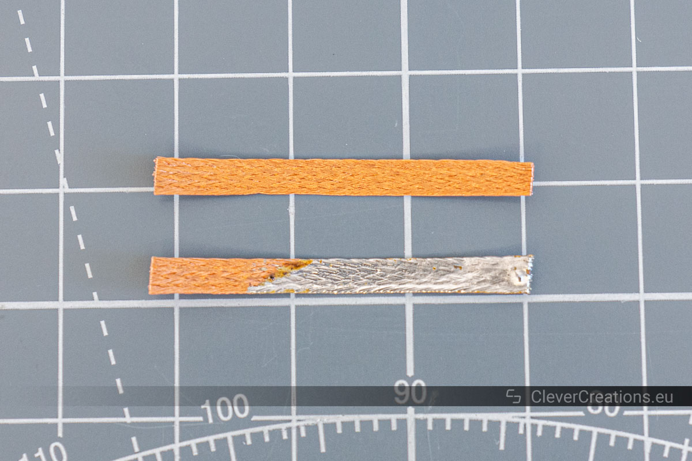
Removing Solder Bridge - Step #2
I like to have good lighting and magnification while desoldering, so I prefer to work under the Mantis or use the head loop magnifiers. Now, add a puddle of solder flux to the solder bridge and surrounding pins. This puddle serves two purposes, it helps keep the solder connection clean and more importantly, helps conduct heat from your soldering iron, through the solder wick, to the solder bridge.
| 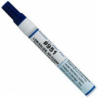 |  |
Removing Solder Bridge - Step #3
Now lay the tinned portion of the solder braid on the solder bridge. Next lay the side of the soldering iron on top of the solder wick over the solder bridge. It should look something like the following image.
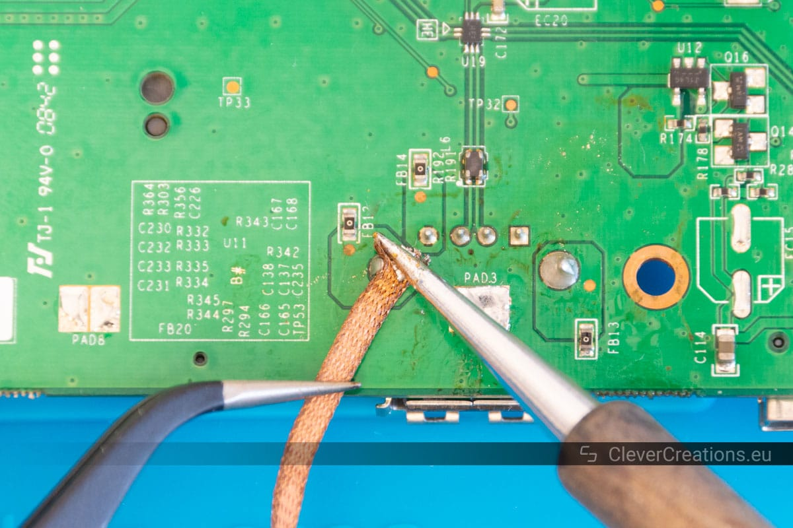
Hold the iron in place do not move the wick laterally across a series of pins as you will bend the pins and rip pads off the PCB. In moments you should see solder flowing up into the braid. Don't hold the heat on too long or you'll remove all the solder from the joint. When you think that you have removed the bridge, lift the iron and braid together away from the PCB. Students generally underestimate the amount of time that they need to remove a solder bridge. I generally count to 6, slowly and then check. If you remove the solder iron without removing the braid, the braid will get stuck to the PCB. If this happens resist the urge to rip the solder wick off the board - you'll just rip the pins and pads off the PCB. Rather, remove a stuck solder wick by reheating everything up and only remove the wick when it lifts away easily.
Students often tend to focus on solder bridges when troubleshooting their development boards. However, too little solder can also be a major problem! Be sure to check that the pins of your ICs are firmly soldered down.
Adding Solder
Oddly one of the hardest problems to locate is an insufficient amount of solder at a solder joint. This typically occurs on IC and the USB pins. It occurs when you did not put enough solder paste on the PCB, or if you remove too much solder while removing a solder bridge.You can identify a pin that does not have enough solder paste by gently trying to move the pin with a small, sharp, firm object like the tips of you tweezers. If a pin wiggles when you press on it, that pin needs solder added to it.
Adding Solder - Step #1
Surprisingly, I add solder by using the solder paste gun. I deposit a small quantity of cold solder paste on the pin and pad. I don't worry if some of the paste touches adjacent pins, because the volume of the solder paste will greatly diminish when it's liquefied. Then I use a hot soldering iron to "reflow" this small portion of solder paste. It can sometimes be tricky to get the solder to stick onto the pin. If you are having a hard time, do not hesitate to just clean the tip of the soldering iron off, maybe add some solder flux, and try again.
Removing Components
If you put a component in the wrong orientation or swapped the location of two same-sized components, then you are going to need to remove one of more components.A soldering iron is almost always the wrong choice and instead you should use the hot-air rework station shown in the image below. The rework station consists of a metal box containing an on/off switch, an air (speed) setting and a heater setting. The hand unit has a plastic handle with a metal tip where the hot air comes out. Please note the position of the hand unit in the image below, the metal tip (and hot air) is angled up and way from the (flammable) desk! I emphasize this because it's easy to replace the hand unit improperly with the tip pointing at the desk. Under normal circumstances its pretty hard to set a desk on fire, but the hot air rework station is capable of doing just that. Enough said.

Removing Components - Step #1
Turn on the hot air station and set both the air and heater knobs to the number 5 setting. I like to place my board in such a way that it does not move. Remove anything flammable away from your board.
Removing Components - Step #2
Keeping the nozzle about 1-2" away from the surface of the board, move the tip slowly around the pins of the components that you are trying to remove. Avoid the body of the component and focus on the pins. Keep in mind that this hot air will be heating nearby components so be mindful of nearby small two leaded components that you may inadvertently reflow and try to aim the steam of hot air way from these components.
Removing Components - Step #3
In about 20 seconds or so the part will start to come free. Keep up the swirling the heat while, with the tweezers in your other hand, you lift the part up. If you fumble the part, don't worry, I have found that the pins will cool quick on their way down and generally the ICC will not stick to anything else. You can set the part down on the blue anti-static mat, it does not have enough heat to burn the mat.
Removing Components - Step #3
Turn off the hot-air rework station. The station will continue to run for a while as cools down the heating element.
Do not solder in the through hole components at this time, you will solder them in incrementally as you work your way through the following tests. Each test will require you to add one or more through hole parts, the introduction to the test will tell you which parts to add for that test.
Test #1 - Test the power subsystem.
Soldering:No through-hole components should be soldered to the development board in this test.
Procedure:
In order for the development board to power-up in the next step you need to insure that resistance between Vcc and GND is in the correct range. To check this perform the following operations.
- Connect a red and black probe to the benchtop digital multimeter (DMM). Make sure the red probe is inserted into the "V Ω" jack and the black probe inserted into the "COM" jack.
- Press the "Ω" button on the DMM to switch it into resistance measuring mode.
- Probe the Vcc and GND break-out header holes around the PIC as
shown in the image below - right mouse click and "Open in new tab"
to see a larger version of the image.

- The resistance should be several 1,000 ohms; 6kΩ in the image
below. There will be some variation and I would consider anything
in the range of 30kΩ to 3kΩ to be normal. Note, as you
add through-hole components to the development board in the following
steps, this resistance will decrease around 3kΩs. This is because
each added component acts like a parallel resistor from Vcc to ground.
Remember, adding a resistor in parallel to a circuit, lowers the
overall resistance of the network.

If the development board resistance is low (less than 5Ω) then you have a short circuit between Vcc and ground. This is either the result of:- A solder bridge,
- Putting in a component backwards,
- Putting a component in the wrong place.
- The following image shows the most likely
culprits of problematic solder bridges between Vcc and GND.

Check for a solder bridge between the two purple pins. Check for a solder bridge between the two orange pins. Check for a solder bridge between the two blue pins. Check for a solder bridge between the 5 yellow pins. - It is easy to get the SOT-23 parts in the incorrect locations. Check the inLab instructions and verify that these parts are in their correct locations. Recheck the picture above and make sure that you didn't put a resistor where a capacitor belong.
- If needed, use the hot air station to remove parts. You can use the soldering iron to put the parts back on the development board. Do not "re-reflow" your board!. You only reflow a PCB once.
- Plug the USB cable into the development board's metal USB connector. I always place my thumb behind the development board's metal USB shell when inserting the cable. This provides some mechanical stress relief to the connector. This is especially important the first few times you plug in the cable as both have some rough edges from their manufacture which need to be smoothed out by use.
- Plug the other end of the USB cable into a computer and immediately check that the power-on LED is illuminated.
- If your power-on LED illuminates, proceed to Test #2.
If the green power-on LED does not illuminate, immediately
unplug the USB cable and proceed to the following debugging
steps.
If history is any guide, the most common problem encountered while assembling the development board will be with the USB connector. Carefully check the 5 pins under the metal USB shell. To do this, I like to prop-up the development board under the Mantis using some materials on hand and then look through the Mantis as shown in the images below.
Check the orientation of the LED and FT230X chip Check that the yellow USB pins are soldered to the PCB. Read the discussion below. Check that the purple FT230X pins are soldered to the PCB. Read the discussion below.
If your power on LED blinks on and off several times before turning off, one of the USB pins is loose. Use some magnification to identify the pin with insufficient solder. I would suggest cleaning the USB pins by applying a line of solder flux across all the pins and melting it with the soldering iron. Once clean, add some solder paste to the loose pin and then reflow the solder paste using the soldering iron.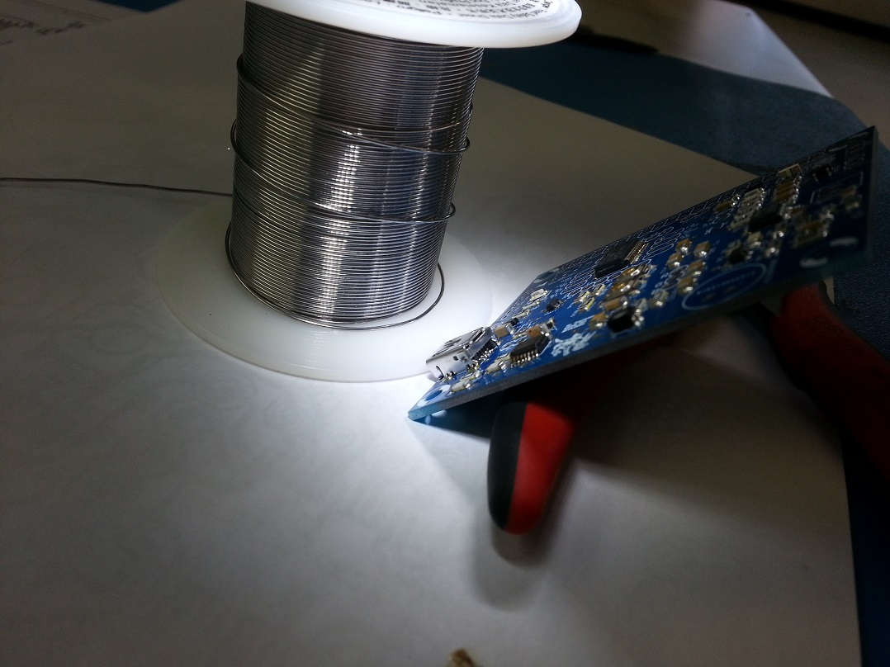 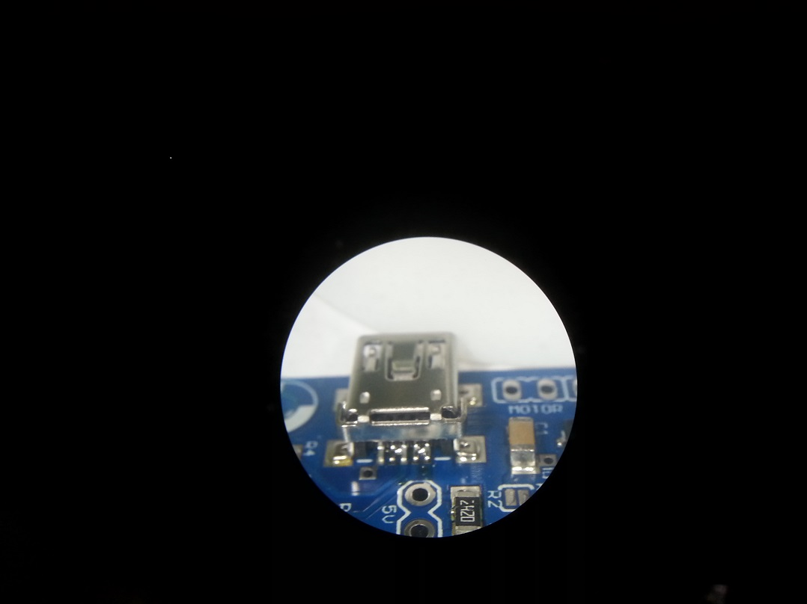 In the image at right, there are two separate solder bridges. I removed these, under the Mantis, using the solder wick technique described above.
In the images below, I did not use solder wick to remove the bridge between the right most pair of pins. Instead I just reheated the pair of pins with the soldering iron and the solder bridge split into two and flowed back to the pair of pins. You can sometimes solve small solder bridges using this technique.

Another common problem is that too little solder paste was applied to the USB pads resulting in a floating pin - a pin not connected to the PCB. To determine if a pin is floating, look for a thin black edge under a pin. To verify the problem, try to slightly move the pin by pushing it with something fine and sharp like a pair of tweezers, a metal mechanical pencil tip. If you can see one of the pins move when gently pushed, you will need to add solder. I like to add solder by applying a little dab of solder paste on/near the floating pin and "re flowing" the solder with a soldering iron. Invariably I add too much solder and have to remove the extra using solder wick.
- When your power LED illuminates you need to check that you are getting the correct voltages before doing any further work.
- Turn on the DMM by pressing the power-on button on the lower left corner of the DMM,
- Plug the red probe into the "V Ω" jack,
- Plug the black cable into the "COM" jack,
- Set the DMM to DC voltage by pressing the "DC V" button,
- Probe the same Vcc and GND break-out header holes as you used to check the resistance between Vcc and GND,
- You should get a reading above 3.2V.
Test #2 - Test USB connectivity
Soldering:
No through-hole components should be soldered to the development board in this test.
Procedure:
- Find out which COM port is being used by the FT230 chip. You can do this is a multitude of ways, one of which is by running Brandon's COM port sniffer.
- The FTDI chip should be assigned a virtual communication port (VCOM), with an integer number typically some value about 3. Note, that the VCOM number will, in general, be different on every computer. If your FTDI chip is connected properly, running the COM port sniffer will generate a message like:

If you FTDI chip is not working correctly then you will get the following message:
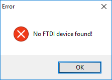
You most like have a problem somewhere between the D+/D- pins on the mini-USB connector and the USBDM/USBDP pins of the FT230 chip. Check the following trouble shooting tips.
The resistance between the orange USB pin and the orange FT230 pin should be around 39Ω The resistance between the yellow USB pin and the yellow FT230 pin should be around 39Ω The resistance between the yellow USB pin and the orange USB pin should be very high, above 1MΩ Test #3 - Test the PIC18F26K22 programming connection
Soldering:
Place the 6-pin right-angle header into the board so that the long pins are on the top side of the PCB as shown in the image below. After inserting the header, flip the board over and solder one pin only. Then flip the board back over and make sure that the header is sitting flush with the PCB. If it moved while soldering, you can easily reheat the single soldered joint and adjust the header so that it sits flush. Be careful, that pin will get hot enough to burn any careless finger that comes in contact with it! Once the header is where you want it, solder the remaining 5 pins.
While it's not soldering, now would be a good time to attach the clear rubber "bumps" to the four bottom corners (under the drill holes) of your development board. This will help prevent an accidental short circuit with a conductive surface you may accidentally lay your development board on while its powered up.
If you have the PICKit 4
In order to correctly connect the PIC Kit 3 to the development board, insert the PIC Kit 4's female headers onto the development board's male pins so that the black arrow on the PIC Kit 4 points to the white arrow on the development board as shown in the image below. You do not need to do this now. 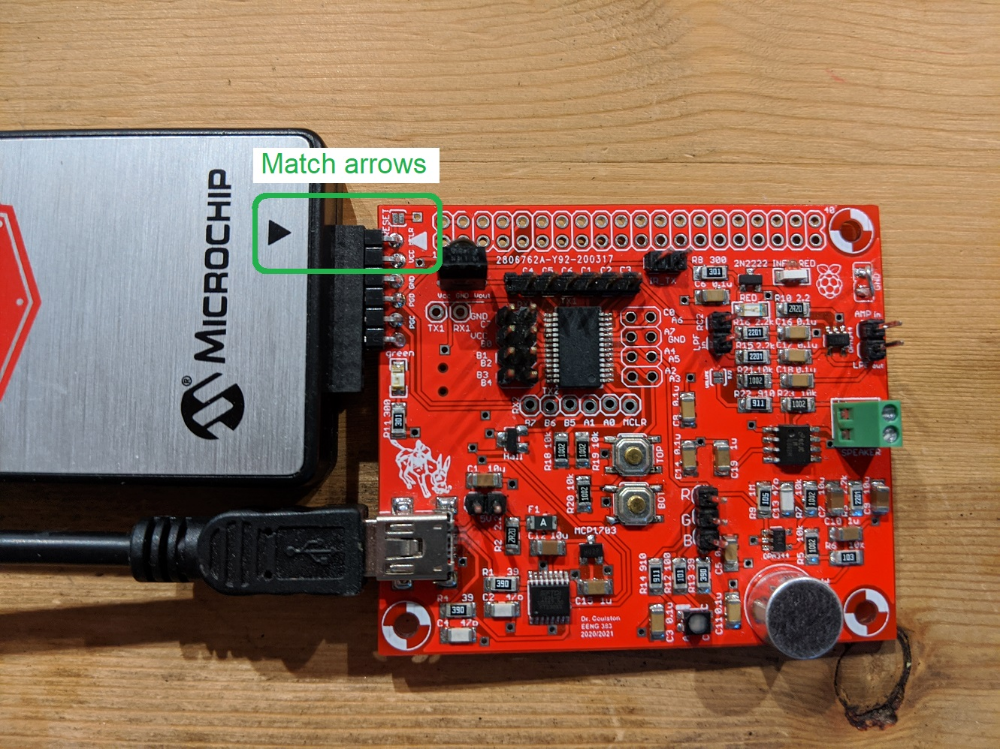 If you have the PICKit 3
In order to correctly connect the PIC Kit 3 to the development board, insert the PIC Kit 3's female headers onto the development board's male pins so that the white arrow on the PIC Kit 4 points to the white arrow on the development board as shown in the image below. While this is an older version of the board, the orientation is correct. You do not need to do this now. If you have the SNAP
If you have the SNAP
In order to correctly connect the SNAP to the development board, insert the SNAP's female headers onto the development board's male pins so that the black arrow on the SNAP points to the white arrow on the development board as shown in the image below. You do not need to do this now. 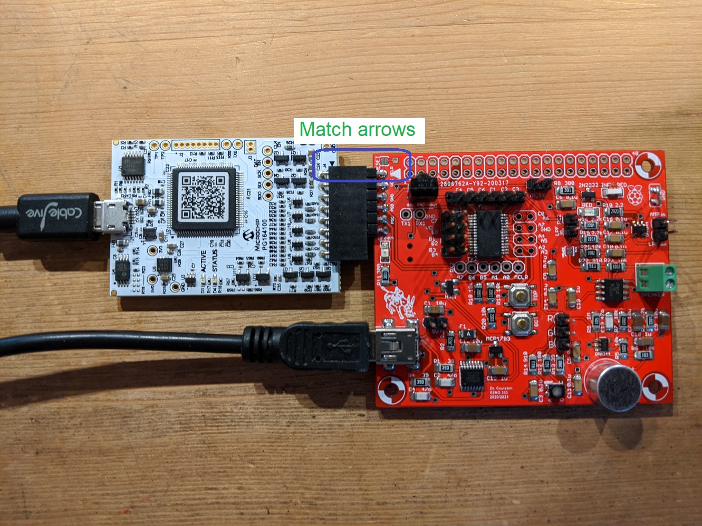
Procedure:
We will now try to talk with the PIC. You will need to perform this test at a computer with MPLab X installed.- Attach the USB cable between your PC and your development board. The green power-on LED should be illuminated.
- Launch MPLab X
- Attached your programmer (PICkit 3, PIC Kit4 or SNAP) to your PC with a USB cable.
- Connect your programmer to the development board using the instructions above.
- Create a directory on hornet /EENG383/lab/lab01
- Download Dev21.X.production.hex into the lab01 directory by right mouse clicking on the link and selecting "Save link as …", or whatever your browser calls it
- File → New Project
- In the New Project pop-up (Step 1. Choose Project)
Categories: Microchip Embedded
Projects: Prebuilt(Hex, Loadable Image) Project
Next> - In the New Project pop-up (Step 2. Create Prebuilt Project)
Prebuilt Filename: navigate to /EENG383/lab/lab01/boardTest.X.production
Device: PIC18F26K22
Hardware Tool: SN: BURxxxxxxxxx where x's are ID or your PICkit 3
Next> - In the New Project pop-up (Step 3. Select Project Name and Folder)
Project Name: board19Test.X.prebuilt (default)
Project Location: \EENG383\lab\lab01 (default)
Finish
- In the New Project pop-up (Step 1. Choose Project)
- Click green Play button in toolbar at the top center of the screen,
- Click OK to the MPLAB pop-up "CAUTION: Check that the device...."
- In the console area at the bottom of the MPLab X window you should
see the following activity in a tab labeled "PICkit 3" or "PICkit 4" or "SNAP".
***************************************************** Connecting to MPLAB Snap... Currently loaded versions: Application version............00.03.23 Boot version...................01.00.00 Script version.................00.03.33 Script build number............0540a22e50 Target device PIC18F26K22 found. Device Id Revision = 0x4 Erasing... The following memory area(s) will be programmed: program memory: start address = 0x0, end address = 0x277f program memory: start address = 0xf500, end address = 0xffff configuration memory Programming/Verify complete
- Work?
- Yes? Great, you can continue to Test #4.
- No, you either have installed the PIC IC in upside down,
have a solder bridge or a floating pin. Use the following image
and debugging tips to help track down the problem.

Verify that there is an open circuit between yellow and orange traces, Verify a connection between programming header orange pin to PIC orange pin, Verify a connection between programming header yellow pin to PIC yellow pin, Verify a connection between programming header purple pin to PIC purple pin, Verify that both PIC GND pins (shown in green) are connected to PCB by looking for a small gap between the pins and the PCB or by pushing the pins with a sharp thin object. Verify that the single Vcc pin (shown in blue) is connected to the PCB by looking for a small gap between the pin and the PCB or by pushing the pins with a sharp thin object Verify that there is no solder bridging the pair of MCLR pads shown in the brown square.
Test #4 - Test RS232 communication
Soldering:
No additional through-hole components should be soldered to the development board in this test.
Procedure:
You have already downloaded the test application written to exercise most of the modules on the development board, now it's time to use this application to complete testing of your board. Let's start by running the test application using the following steps.
- Connect the development board to the PC through the mini-USB connector,
- Disconnect the PICkit 3 and set aside. Since the PIC18F26K22 is a flashed based part, its non-volatile memory will hold the test application until you overwrite it in lab 2,
- Find out which COM port is being used by the FT230 chip. You can do this is a multitude of ways, one of which is by running Brandon's COM port Sniffer,
- Launch PuTTy
Connection type: Serial
Serial line: COMx (where x is the port associated with the FT230
Speed: 9600 (the default)
Open - Type "?" in the PuTTy window.
This test hex file will bring up an interactive terminal application on virtual COM port. You should see:
============================================================== ?: help menu o: k Z: reset processor z: clear the terminal b: Button test. l: Low pass filter (LPF) test. a Amplifier test. d: IR decoder test. m: Microphone test c: RGB LED test. t: IR LED transmitter test. h: Hall effect sensor test. ==============================================================
The prompt, "CMD>" is telling you that the PIC is waiting for a command corresponding to one of the letters in the leftmost column. Anytime that you want see the menu, press "?". The PIC is not a very fast processor and if you press two keys in quick succession, you may hang the processor - sad but true. If this happen reset the PIC using the reset procedure outlined in the Subsystems tests section just below.
For the time being it would be a good idea not to explore these options as some of them require you to solder and configure jumper wires.
If you do not get a menu on the screen you have a bad connection somewhere on the yellow and orange signals shown in the figure below. You need to look for a short circuit between the two signals and make sure that the orange and yellow signals are connecting the FT230 and PIC.
Verify that there is an open circuit between yellow and orange traces, Verify a connection between FT230XS orange pin and the PIC orange pin, Verify a connection between FT230XS yellow pin and the PIC yellow pin, Verify that both PIC GND pins are connected to PCB by looking for a small gap between the pins and the PCB or by pushing the pins with a sharp thin object. Verify that the single Vcc pin is connected to the PCB by looking for a small gap between the pin and the PCB or by pushing the pins with a sharp thin object. Subsystem tests
You are going to work through each of the subsystems on your development board and test them one at a time. After soldering in a new component, it would be a good idea to re-run all the subsystem tests to check that you did not create a problem with the added component. This type of testing is called regression testing.
While testing you PIC may hang for a variety of reasons. You can reset the PIC processor by rubbing a conductive object over the pair of solder pads labeled "RST" on the development board. In the diagram above these pads are labeled "Reset". What you are trying to do is to electrically connect the two pads together; in the moment this happens the PIC will reset and start running from the beginning. You will know that you have reset the PIC when you are greeted by the splash screen:Dev'21 Board Test Program Fall 2020 Colorado School of Mines - EENG 383
I prefer to use the blunt tip of my hemostats to electrically short the two RST pads together. It's normal to get some garbage characters at the start of the splash screen - this is just the baud-rate generator inside the USART subsystem converging to proper frequency. If you see some weird characters before the "Dev'21" text, it's just the PIC's internal character generator oscillator getting up to speed.
Test #5 - Test CPU
Soldering:
Take a moment and solder ground loops to the PCB. I've found that the leads of a through hole resistor make great wire for the ground loop - don't feel bad trashing a resistor for this, they are cheap. When complete, your ground loops should look like the image below (note this is a picture of a fully assembled board, yours will not have the through hole components soldered in yet). Ground loops allow you to attach the ground lead clip of a oscilloscope to your board - super handy.
Procedure:
Once you have the ground loop in, let's test them out by checking if the PIC is running. To do this follow these oscilloscope instructions. Note, you will have to remove the "gripper" form the end of the scope probe and insert the sharp end of the of the probe into the break-out holes around the PIC.
Make sure thatCh1 probe RB6 Ch2 probe RB7 Ch1 ground clip Dev board ground loop Horizontal (scale) 500 us Ch1 (scale) 2V Ch2 (scale) 2V Trigger mode Auto Trigger source 1 Trigger slope ↑ Trigger level 1.2V - Aligning Ch 1 and Ch2 on the second lowest reticules on their respective halves of the screen,
- Align the horizontal position at the second left-most reticule,
- Clear all menus off the bottom of the screen
[↑Back] - Since the two channels are not synchronized, you may need to
tell the oscilloscope to stop refreshing the screen. To do this:
Run Control → Run/Stop (the button will illuminate red)
To resume refreshing the screen press the Run/Stop button again causing the button to be illuminated green.
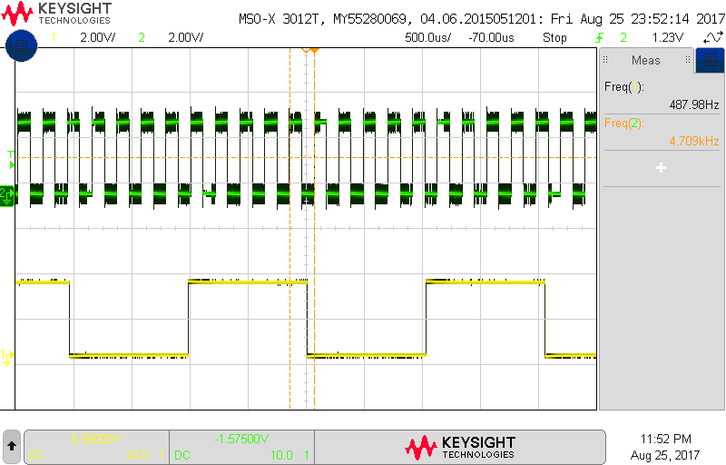
Test #6 - Test Terminal
Soldering:
No additional through-hole components should be soldered to the development board in this test.
Procedure:
Since you already got the menu to work, this test is a little silly, but hey the menu options are there. So go ahead and press "o", the PIC should respond with the letter "k". This is the most basic test of the PICs ability to read and write information over its universal asynchronous synchronous receive transmit (USART) port.
You can also experiment with "z" and "Z" to clear the screen and reset the processor. Note that the "Z" reset is called a soft reset because it occurs from within code. If the PIC is hung, then this option will not be available and you will have to short together the two RST pads on the development board.Test #7 - Test Buttons
Soldering:
Solder in the 2-pin header pins adjacent to the USB connector (labeled with "5V"). See the debugging image below to see where this header belongs.
Procedure:
When you press "b" at the command prompt, you will see the following message:CMD> b Button test Press any key to exit. Press the upper, lower, or both buttons.Each time one or both button is pressed a message will appear in the terminal.
If this test fails, check the connections in the figure below.
Verify that the resistance from the bottom pad of the orange resistor to the orange PIC pin is about 10kΩ Verify that the resistance from the bottom pad of the yellow resistor to the yellow PIC pin is about 10kΩ Test #8 - Test Hall effect sensor
Soldering:
No through-hole components should be soldered to the development board in this test.
Procedure:
When you press "h" at the command prompt, the PIC will test the Hall effect sensor. A hall effect sensor is a device which outputs a voltage proportional to the magnetic field present at the ICs surface. When pressed you should see the following:CMD> h Hall effect sensor test Wave north and south poles of magnet above Hall effect sensor. Press any key to exit.Placing the north or south facing magnetic field of your magnet will elicit a message on the terminal.
If this test fails, check the connections in the figure below.
Verify a connection from the orange Hall effect sensor pin to the orange PIC pin, Verify purple and yellow Hall effect sensor pins are each connected to the PCB, Verify no connection between purple and orange Hall effect sensor pins. Break Time!
Through the assembly process, you have applied all sorts of chemicals to your PCB. While these chemicals are mostly benign to both you and the board, it might be nice to clean them off.
Our lab is equipped with a Crest P500 Ultrasonic Cleaner. This tool is a professional piece of equipment that can do a really good job of cleaning your development. In order to see how to this, read the instructions posted at this UltraSonic Cleaner link.Test #9 - Test Microphone
Soldering:
Solder in the microphone. Make sure that the microphone is aligned with the white silk screen on the development board as this is a polarized part.
Procedure
When you press "m" at the command prompt, the PIC will test he the microphone. When sampled, the microphone provides the amplitude of the sound wave to the PIC which then converts this amplitude into an 8-bit value between 0 and 255. Since sound is time varying, this test provides 16 samples, each 100uS apart. The samples are collected as soon as you press a key (after pressing "m"). This allows you to start your whistle and get it going before it's sampled. An example of the test output is shown below.CMD> m Microphone test While whistling near the mic, press any key. Sampled every 100uS. MIC: 73 44 65 127 176 176 121 59 35 66 127 171 152 89 33 22These outputs may look a little random, so I plotted them in excel in order to make more sense of them. The image below shows the resulting plot and definitely reveals the sinusoidal nature of a whistle. You do not need to plot the samples as part of this assignment.
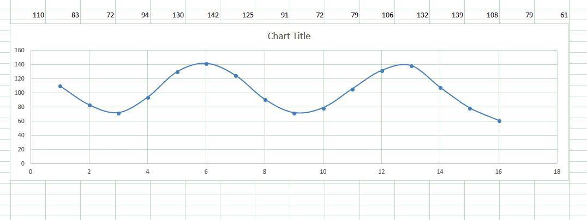
Since we know the samples are taken every 100us, the period of my whistle is about 70us which corresponds to 1.4kHz, a reasonable value for a whistle.
The samples are biased around the mid range value of 128. The louder your whistle, the higher the amplitude of the waveform. If you whistle too loud or too close to the microphone, you will saturate the microphone output at 0 and 255. When plotted, these will be flat peaks.
If this test fails, check the connections in the figure below.
Verify orange PIC pin is soldered to PCB, Verify all pins of OPA344 (IC in purple area) are soldered to the PCB, Verify resistor values and connections in purple area. Test #10 - Test Remote Control Receiver
Soldering:
You need to solder in the IR remote control decoder into the board. This is a 3 pin device with a black dome on one side. Align the dome so that it points outward from your board - the dome should point to the top of the board. If you solder the IR decoder in backwards, you will create a short between Vcc and GND and your power-on LED will not illuminate. If you are having difficulties finding where to install the IR decoder, see the debugging image below.
Procedure:
When you press "d" at the command prompt, the PIC will test the remote control decoder. The IR remote control decoder sensor is able to translate the IR energy emitted by most remote controls into a series of logic-level pulses. This little application will tell you the length of the first 16 of these pulses. After hitting "d" at the command prompt, grab any handy remote control, point it towards the dome shape on the IR decoder and press a button. You should immediately see a series of numbers appear on your terminal.
For example, pressing the OFF button on my RoKU remote produced the following output.CMD> d IR decoder test Press a IR remote control button. Press any key to exit. bit high low 0: 0 4647 1: 23b4 464 2: 448 473 3: d13 47b 4: 442 46f 5: d19 474 6: 442 485 7: d0d 470 8: d1b 472 9: d12 46e 10: 457 46f 11: d27 471 12: 445 461 13: 456 471 14: 450 476 15: 44f 476 Done decoding IR packet.
If this test fails, check the connections in the figure below.
Verify purple PIC pin is connected to PCB. Verify IR decoder is soldered in correct orientation, Test #11 - Test IR LED Transmission
Soldering:
Solder in the 2-pin header at the top of the development board labeled "IR_TX" on the PCB silkscreen. Solder in a 6-pin header to the top row (labeled C4, C5, C6, C1, C2, C3) above the PIC. You will have to cut these pins from the long collection of header pins using your side cutters.
For both sets of headers, start by soldering in one pin (on the back of the PCB) then flip the PCB over and make sure that the header is well aligned. If the header is not well aligned, just reheat the solder joint and straighten out the crooked header - careful the pin attached to the solder joint will be hot enough to burn any careless finger that comes into contact with it.
If you are having problems finding the header location, consult the debugging image below.
Procedure:
When you press "t" at the command prompt, the PIC will test the IR LED and driver. When you press "t", you will be presented with the following options - these used to control the projector in Brown 305. The projector was moved out during the summer :(Connect jumper over IR_TX header. Select the index of the command to send from the following list: 0 OFF 1 ON 2 MAG+ 3 PIC MUTE 4 PG UP 5 MAG- 6 PG DOWN 7 MENU 8 UP 9 LEFTBefore performing this test please make sure that you place jumpers across the 5v jumper pins near the USB port (from Test #7). This jumper will help ensure that operating the IR LED doesn’t brown out the PIC. Also place a separate jumper across the jumper you just soldered. This jumper will enable the PIC to control the IR LED.
When you issue the "t" command from command prompt the PIC will ask you what IR command you want to send to the projector that used to be in Brown 305. Instead of the projector, you will use an oscilloscope connected to the IR Remote Control Receiver output. Do this as follows.
Connect an oscilloscope probe to channel 1. Connect the ground clip of the oscilloscope to the ground loop you soldered in for Test #5. Use the oscilloscope probes gripper to attached to the RC0 header pin that you just soldered in.
Make sure thatCh1 probe RC0 Ch1 ground clip Dev board ground loop Horizontal (scale) 10ms Ch1 (scale) 1V Trigger mode Auto Trigger source 1 Trigger slope ↓ Trigger level 1.65V - Aligning Ch 1 is on the second lowest reticule on the screen,
- Align the horizontal position at the second left-most reticule,
- Clear all menus off the bottom of the screen
[↑Back] - Make sure the Run Control button is is illuminate green.
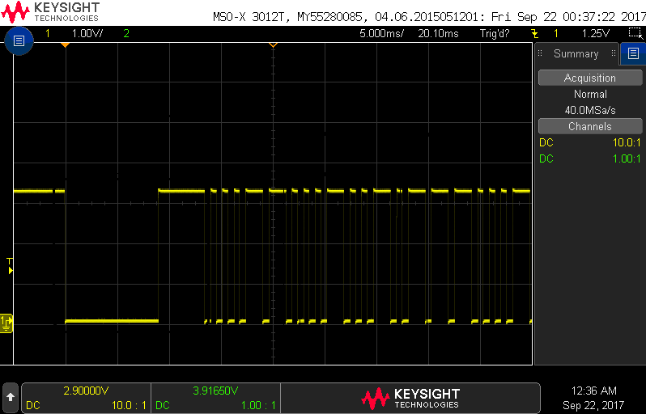
It's important to remove the jumper from the IR_TX jumper after you complete this test. This circuit draws a lot of power and may cause the PIC to brown-out if the jumper is left in place for other tests.
If the test does not work, try the following.
Verify orange PIC pin are soldered to PCB, Verify orientation of the IR LED, Verify all pins of 2N2222 are soldered to PCB, Verify resistor values and connections in purple area. Test #12 - Test Low Pass Filter
Soldering:
Solder in two pairs of 2-pin header into the following locations:- RC2 and LPFin (to the right of the PIC),
- LPFout and AMPin (just below the ground loop).
Procedure:
When you press "l" at the command prompt, the PIC will test the low pass filter. This test will check that the Low Pass Filter (LPF in the module view above) is functioning correctly. To accomplish this you will connect a PWM channel to the LPF. You will also connect oscilloscope probe (channel 1) to the PWM input and an probe (channel 2) to the LPF output to verify correction operation. When you type "l" at the prompt you will see the following instructions.CMD> l Low pass filter (LPF) test Install jumper over RC2 and LPFin on header. Connect oscilloscope channel 1 to PIC header pin C2 (vertical scale 2v/div). Connect oscilloscope channel 2 to LPFout pin on header (vertical scale 1v/div). Trigger on channel 2. Set the horizontal scale to 250ms/div. Press upper button to increase frequency. Press lower button to decrease frequency. Hit any key to exit.
Follow these instructions. When a jumper is placed over a pair of pins, you can still probe the signal by attaching an oscilloscope probe to the metal connection shown.
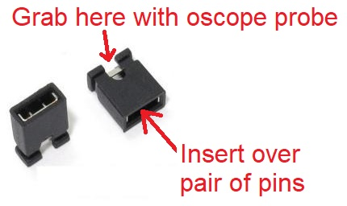
In order to observe the signals being generated, you need to connect MCU pin RC2 to LPF_in pin of JP2 header with a jumper wire. After you do this setup your oscilloscope as follows:
Make sure thatCh1 probe RC2 Ch2 probe LPFout Ch1 ground clip Dev board ground loop Horizontal (scale) 250 ms Ch1 (scale) 2V Ch2 (scale) 1V Trigger mode Auto Trigger source 2 Trigger slope ↑ Trigger level 1.2V - Aligning Ch 1 and Ch2 on the second lowest reticules on their respective halves of the screen,
- Align the horizontal position at the second left-most reticule,
- Clear all menus off the bottom of the screen
[↑Back] - Since the two channels are not synchronized, you may need to
tell the oscilloscope to stop refreshing the screen. To do this:
Run Control → Run/Stop (the button will illuminate red)
To resume refreshing the screen press the Run/Stop button again causing the button to be illuminated green.
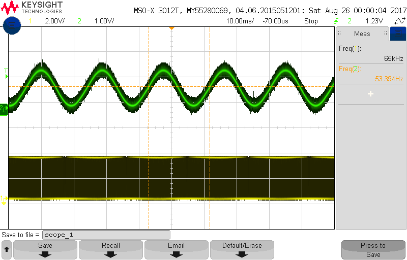
If this test fails, check the connections in the figure below.
Verify am open circuit between the orange and yellow pins of the PIC, Verify orange and yellow PIC pins are connected to the PCB, Verify all pins of the OPA344 (the IC in the purple area) are soldered to the PCB, Verify no solder bridges in the purples area, Verify resistor values and connections in purple area. Test #13 - Test Amplifier
Soldering:
Solder in the green screw terminal below the ground loop. Make sure to orientate the screw terminal so that the opening for wires faces the outside of the PCB. See the debugging image below for the location of the screw terminal.
Solder in a 4x2 header into the break-out connections to the right of the PIC. These 8 pins are labeled C0, A6, … A3, A3. As always, solder a single pin first, flip the PCB over, check the header orientation, fix any issues, then solder the remaining pins. See the debugging image below for the header location.
Remove a pair of jumper wires and cut off the ends leaving a pair of male connectors. Strip the ends and solder them to the speaker. This should look something like the following image.
Insert the exposed ends of wire from the speakers into green terminal block and tighten the screws on the terminal block to hold the speaker in place.
Procedure:
When you press "a" at the command prompt, the PIC will test the audio amplifier. The following instructions tell you how to configure the development board.CMD> a Amplifier test Press any key to exit. Connect PIC pin C4 to LPFin pin using a jumper wire. Place a jumper over the LPFout/AMPin jumper. Place a jumper over JP1 next (it's next to the USB port). Connect the speaker to the green terminal block. Press the upper button to play the next note from a song. Press any key to exit.The development board comes equipped with a National Semiconductor LM4862 audio amplifier which will drive the mini speaker. While the button is held down, the note will play. Releasing the button moves to the next note which is played when the button is pressed.
You must place a jumper over the 5V jumper when performing this test, otherwise your PIC will brown-out. This will cause unpredictable behavior. It's possible that your development board will brown-out during this test even with 5V jumper in place. This can happen because the speaker draws so much power that the Vcc level on the development board drops below the minimum needed to keep the PIC operating correctly. However, there is also a chance that something is wrong with your board, so check the connections in the figure below.
Verify that the orange PIC pin is connected to the PCB, Verify all pins of the LM4862 (the IC in the purple area) are soldered to the PCB, Verify no solder bridges in the purple area, Verify orientation of the LM4862 (IC in purple area), Verify resistor values and connections in purple area. Test #14 - Test RGB LED
Soldering:
Solder in the 3-pin header RGB header above the RGB LED. Solder in the 6-pin header below the PIC which are labeled B7, B6, B5, A1, A0, and MCLR.
Procedure:
When you press "c" at the command prompt, the PIC will test the RGB LED, and you will receive the following instruction on where to place three colored jumper wires in your kit. You may can separate the jumper wires by peeling them away from one another.CMD> c RGB LED test Connect RC2 to R. Connect RB0 to G. Connect RB5 to B. Hit any key to exit.When you run the RGB test you should note that the LED cycles through the rainbow colors. Its not an entirely smooth progression, but should be fairly close.
If this test fails, check the connections in the figure below.
Verify yellow, orange and purple PIC pins are soldered to PCB, Verify all pins of RGB LED (in green area) are soldered to the PCB, Verify RGB LED is installed in the correct orientation (nipped corner should be upper left), Verify resistor values and connections in green area. Done!!
You may have noticed that we did not solder in the SD card holder onto the bottom of the PCB. We will get around to soldering the SD card holder onto the development board in a later lab. For now enjoy the satisfaction of getting your development board working. - When your power LED illuminates you need to check that you are getting the correct voltages before doing any further work.